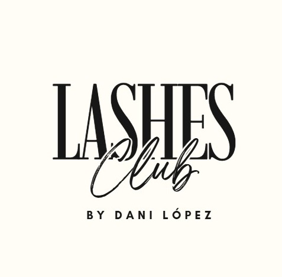
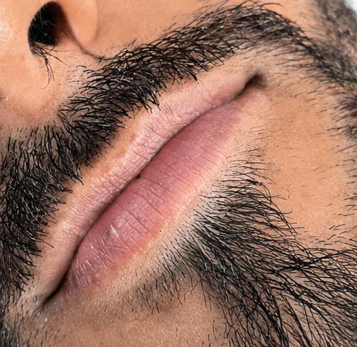
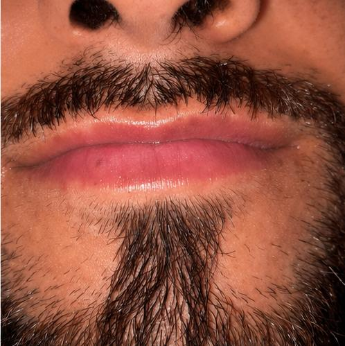
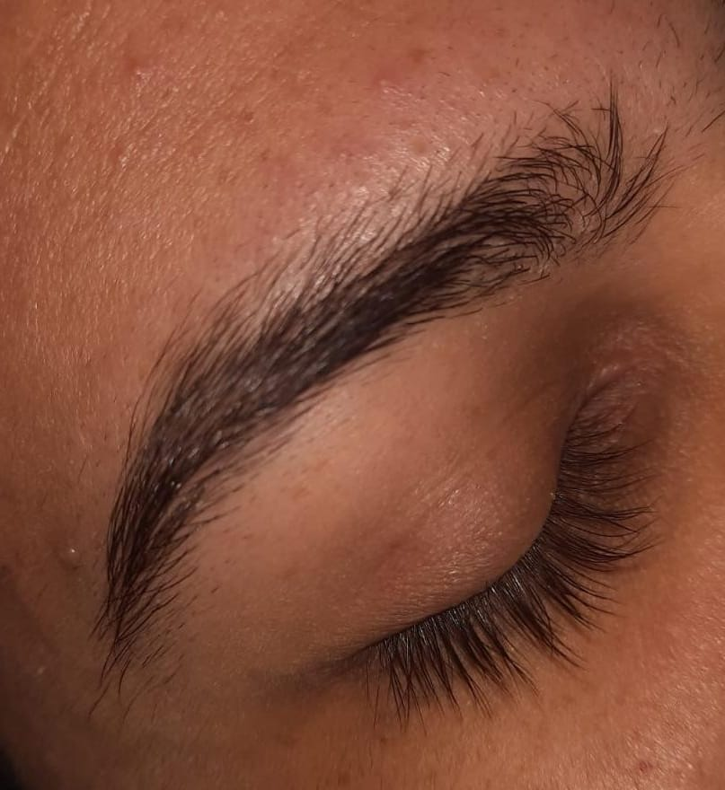
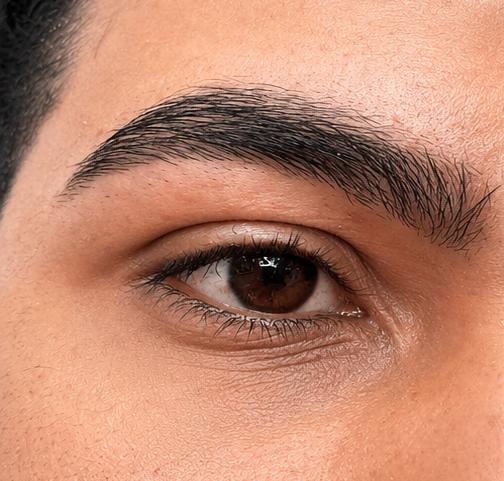
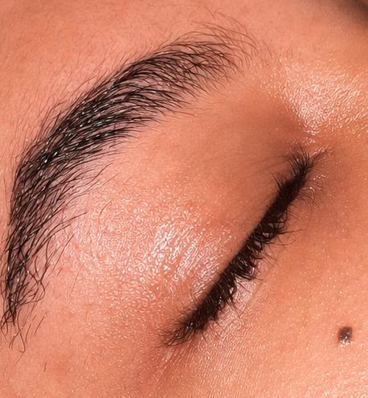
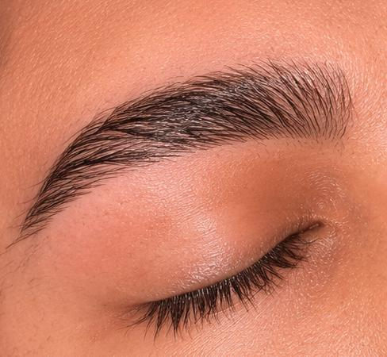

Se refiere a una técnica donde se aplican grupos pequeños de pestañas postizas (denominados "puntos" o "clústeres") sobre la línea de las pestañas naturales del cliente. Es un método rápido, generalmente utilizado para eventos puntuales, ya que su duración es corta en comparación con otras técnicas.
Es una técnica más avanzada y precisa en la que se adhiere una extensión de pestaña sintética de forma individual sobre cada una de las pestañas naturales del cliente. Este proceso permite un resultado más natural, personalizado y duradero, manteniendo la salud de la pestaña natural si se realiza correctamente.
A diferencia de las extensiones, este procedimiento químico busca alzar, curvar y dar volumen a las propias pestañas naturales desde la raíz. El objetivo es lograr una apariencia de mayor longitud y apertura de la mirada sin necesidad de pestañas postizas.
Es el proceso profesional para eliminar las extensiones de pestañas (ya sea punto a punto o pelo a pelo) utilizando productos solventes especializados. Es fundamental realizar este procedimiento con un experto para evitar daños, tirones o la pérdida de las pestañas naturales.
Es un procedimiento cuyo objetivo principal es dar forma a las cejas para armonizar el rostro y resaltar la belleza de la mirada. Puede realizarse mediante diversos métodos como pinzas, cera o hilo, siendo fundamental realizar un diseño adecuado basado en las facciones y la naturaleza propia de la ceja.
Este tratamiento consiste en teñir tanto el vello como la piel con un tinte de origen vegetal. Es ideal para rellenar espacios, corregir asimetrías y proporcionar una apariencia de mayor densidad y definición, con una duración aproximada de 5 a 12 días en la piel y hasta 4 a 6 semanas en el vello.
Es un tratamiento semipermanente que alisa, peina y fija los vellos de las cejas, usualmente hacia arriba. Su propósito es lograr que las cejas luzcan más densas, ordenadas y definidas.
Es un tratamiento de hidratación profunda y realce de labios que se realiza mediante una técnica de micropunción con Dermapen. Al ser un procedimiento no invasivo, no requiere inyecciones; ayuda a mejorar la textura, el color y la suavidad de los labios, estimulando además la producción de colágeno y elastina sin dar una sensación de relleno artificial.
HIDRALIPS

Antes

Después
DISEÑOS DE CEJAS

Antes

Después
LAMINADO DE CEJAS

Antes

Después